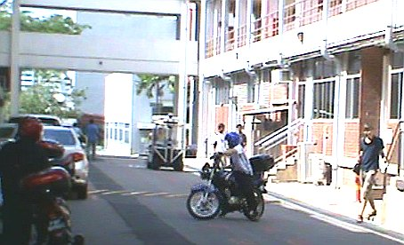

Intention Aware Motion Planning
As robots venture into new application domains as autonomous vehicles on the road or as domestic helpers at home, they must recognize human intentions and behaviors in order to operate effectively. This generates a new class of motion planning, problems with uncertainty in human intention.Identifying human intentions is difficult because of the diversity, subtlety of human behaviors and the lack of a powerful "intention sensor". The intentions have to be inferred from observations about the person's behavior.
|  |
A relevant example is the avoidance of pedestrians or human drivers on the road. The task of the robot is to navigate the stretch of the road. However it must take the pedestrian's intentions to move towards its goals into account for safe navigation. In many known environments especially urban road segments, the pedestrian's goals can be identified well by studying pedestrian motion flow patterns in an offline fashion. The robot just needs to gather enough observations about a particular pedestrian to identify the goal it is heading towards in an online fashion.
Technical Approach
We formulate the problem of intention aware planning as a recently introduced Mixed observability Markov Decision Problem (MOMDP), a variant of traditional POMDP, where the variables with sufficient observability are factored out to achieve significant gains in computational requirements. With the assumption that the pedestrians positions and the robot's location are observed within acceptable accuracy the only unobserved variables are the pedestrian's intentions leading to an efficient implementation of the problem.
This approach outperforms traditional techniques of pedestrian avoidance e.g. bayesian maximum likelihood approach, where an inference on the pedestrians intentions are made and the action is taken against most likely intentions. Due to the fact that the uncertainty in pedestrian's intention is directly incorporated into the decision making, the actions are safer showing lower rates of collision ( in simulated studies ) without incurring additional extra cost in navigating time.
Performance on a real vehicle
We have implemented the algorithm on our autonomous platform to successfully avoid pedestrians on the road. In many cases the set of all possible goals the pedestrians move towards in an environment can be learnt offline. However in real time there is still uncertainty about which of these goals the pedestrian is actually moving towards. This information is hidden to the autonomous vehicle and it has to infer and plan in spite of such uncertainty.We show that even though POMDPs are considered intractable for real world problems, with proper factorization of the variables they can perform in real time providing intelligent behavior.
We show the results on a real pedestrian crossing in NUS campus. In the experimental setup, the vehicle has to identify the intention of the pedestrian over a set of goals (A,B,C,D) while navigating along the pedestrian crossing. Note that even though the pedestrians are supposed to move within the crossing area many of them jaywalk, which then has to be taken into the planning framework.
In the videos below, the vertical bars (color coded to goals) show the prediction indicating the belief over the intention of the pedestrian. The red/green horizontal bar shows the robot's decision to stop/go w.r.t that particular pedestrian.
| Pedestrians may act in an uncertain manner and may walk on the road instead of the side walk. The above video shows that without infering the intention of the pedestrian the vehicle may get stuck for a long time waiting for the pedestrian to move away. |
| For each new pedestrian detected, a new instance of the MOMDP problem is generated and the decisions combined in a conservative manner. Assuming independence of pedestrians, the computational load per pedestrian increases almost linearly leading to tractability in handling large number of pedestrians. |
Relevant Publications
- T. Bandyopadhyay, Z. J. Chong, D. Hsu, M. H. Ang Jr., D. Rus, and E. Frazzoli Intention-Aware Pedestrian Avoidance. In Proceedings International Symposium on Experimental Robotics, ISER-2012.
- T. Bandyopadhyay, K. S. Won, E. Frazzoli, D. Hsu, W. S. Lee, and D. Rus. Intention-Aware Motion Planning. In Proceedings Workshop of Algorithmic Foundations, WAFR-2012.